Raspberry AI: Masking on a Canvas
Multi-material masking, a mode leaving the rest of the workspace usable.
A guided tutorial system built around workflows to reduce onboarding calls.
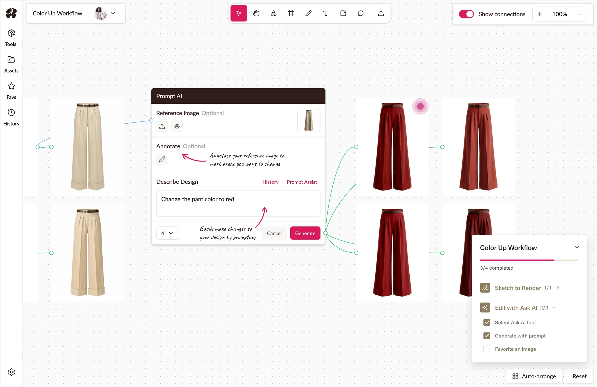
Raspberry AI is a generative design platform for fashion designers, backed by a16z and used by brands like Steve Madden and Levi's. Its tools were strong individually but didn't explain themselves together, so new customers were onboarded personally by a Raspberry rep.
I designed a guided tutorial system built around workflows, not features, covering both the classic platform and Boards, its new canvas workspace. The tools and canvas already existed; I designed the workflow sequences, step placement and content, and entry points on top. Classic shipped first, Boards followed; both live today.
New designers didn't start on Raspberry AI. They started on a call. A scheduled session with a Raspberry rep walking them through the platform.
That call wasn't just teaching tools. It answered a bigger question: where does this fit into how I already work? Raspberry is built as separate tools, but a designer's work runs in workflows. Turning sketches into product images with multiple colourways crosses several tools in sequence. Without that context, the platform read as fragmented features with no obvious connection.
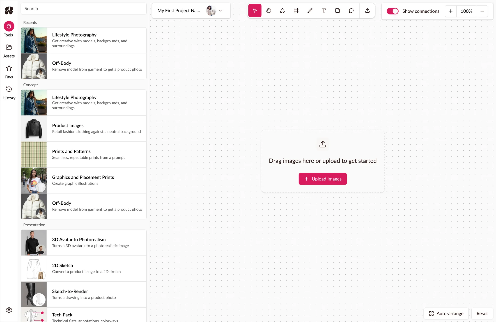
Raspberry raised the cost themselves, calling onboarding a significant drain on their team's time. They were also building Boards, a canvas workspace that transformed how the app is used.
Two problems, in that order:
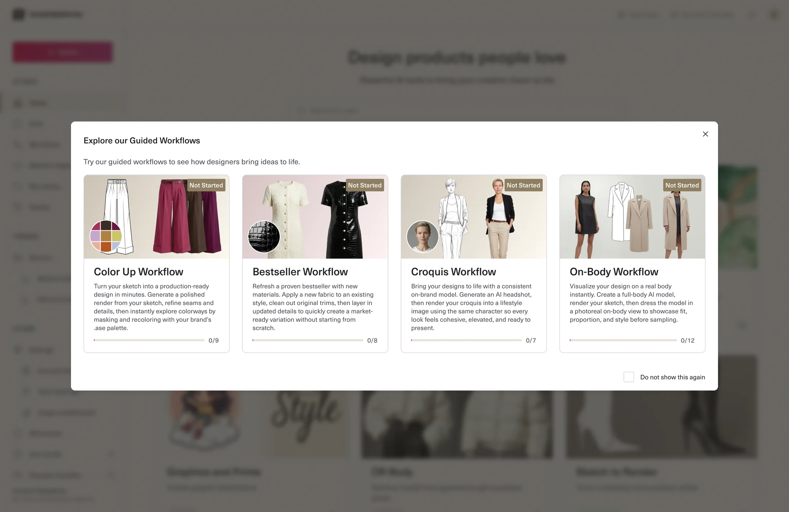
The product is organized by tool but the work is organized by workflow. Per-tool tutorials were the cheaper answer, self-contained and easy to scope. A middle option existed too: per-tool tutorials and a map of how they connect. Workflow tutorials meant one tutorial running across several tools in sequence.
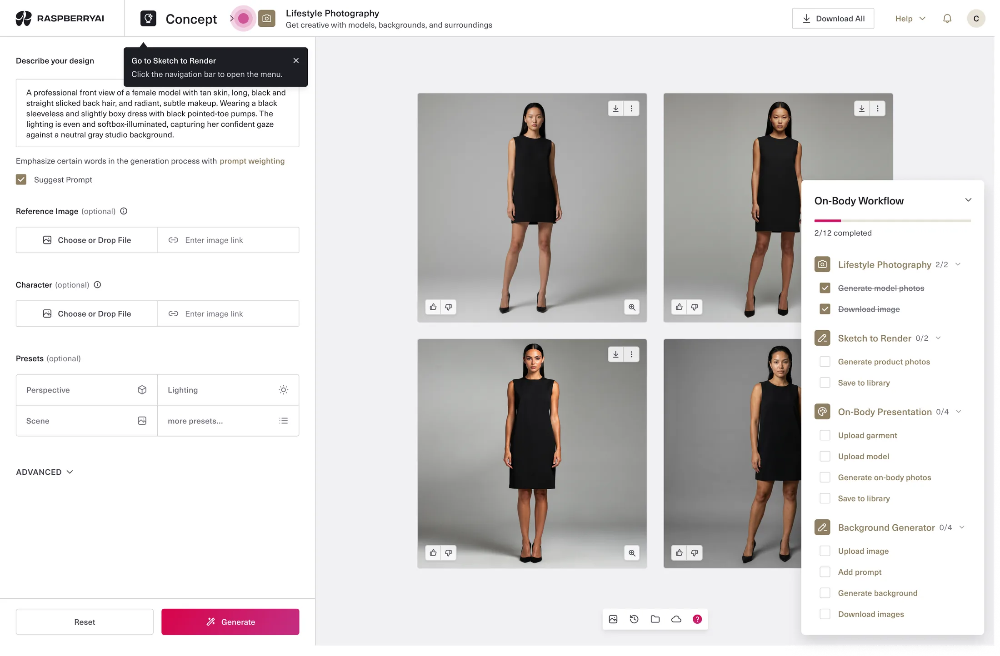
I went with workflows because the objective was comprehension of fit.
Per-tool tutorials teach mechanics but can't show where Raspberry sits in a designer's process. A map can label a seam but doesn't walk anyone across it. Only a sequence does that, which is what the onboarding call had been doing.
The cost: a tutorial couldn’t belong to a single screen. Progress had to survive navigation across tools, and a designer who left mid-workflow needed a way back to where they'd left off.
By the time Boards came back into scope, the classic tutorials had shipped. The question now was whether the existing pattern could fit onto a canvas.
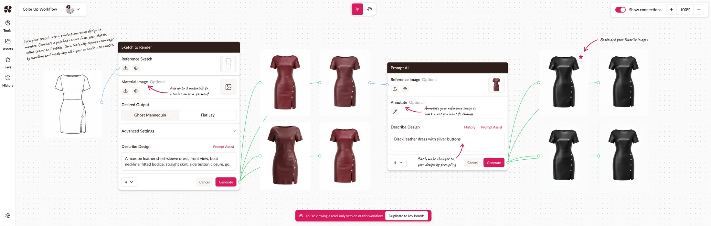
The first option was creating example files. A complete workflow laid out on a board, sketch through to recoloured product images, with notes around the canvas highlighting features and tips. A designer could duplicate it and use it as a playground.
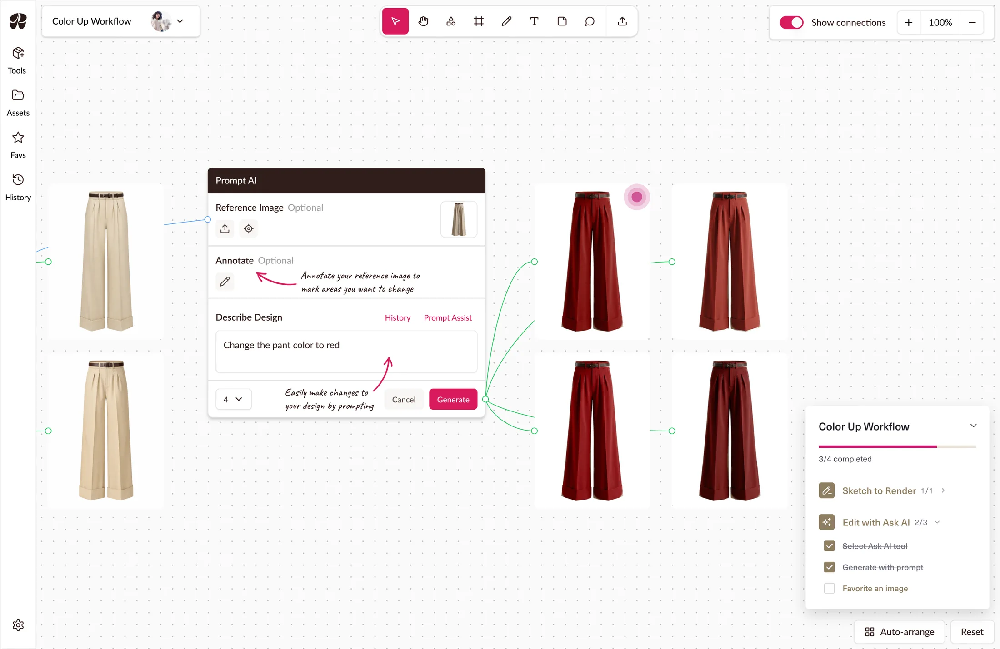
The second was to bring the classic app’s event-based steps into Boards anyway, carrying over the notes from the first idea, walking a designer through the same sketch-to-recolour sequence while highlighting important tips.
I decided on the second: an example file shows a finished workflow, not how to get there, and that was the whole objective.
A designer looking at a completed board sees what Raspberry can produce, not where it fits in their process.
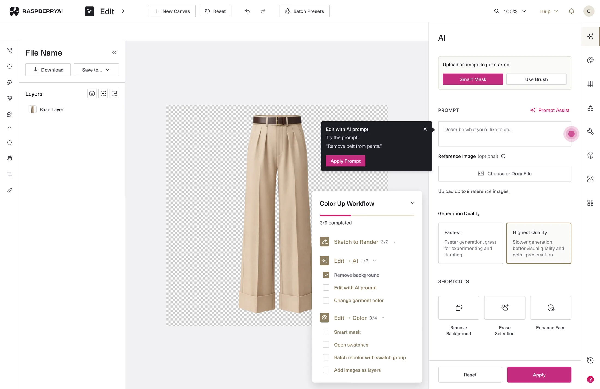
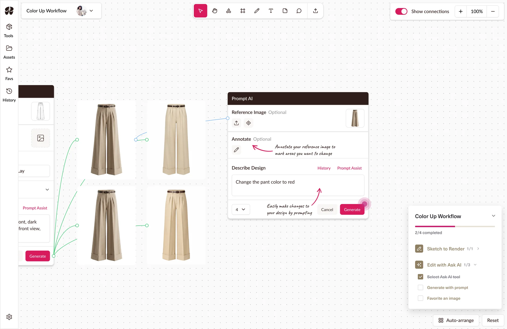
Classic tutorials use tooltips; Boards needed something gentler for designers who already knew the tools but not the canvas. I kept the progress tracker and swapped tooltips for canvas notes. Less intrusive and ignorable by anyone who didn't want them. Notes were cut before release, so what shipped carries just the tracker and step sequence.
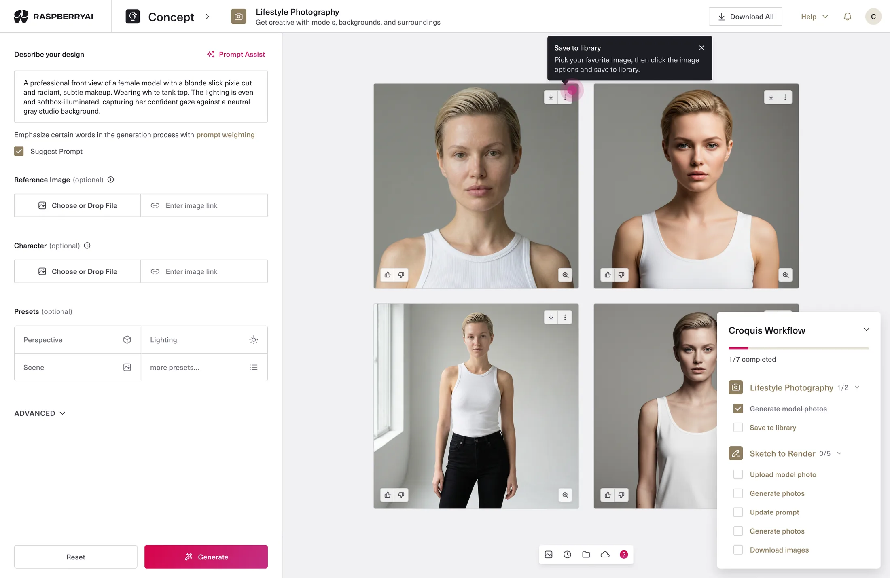
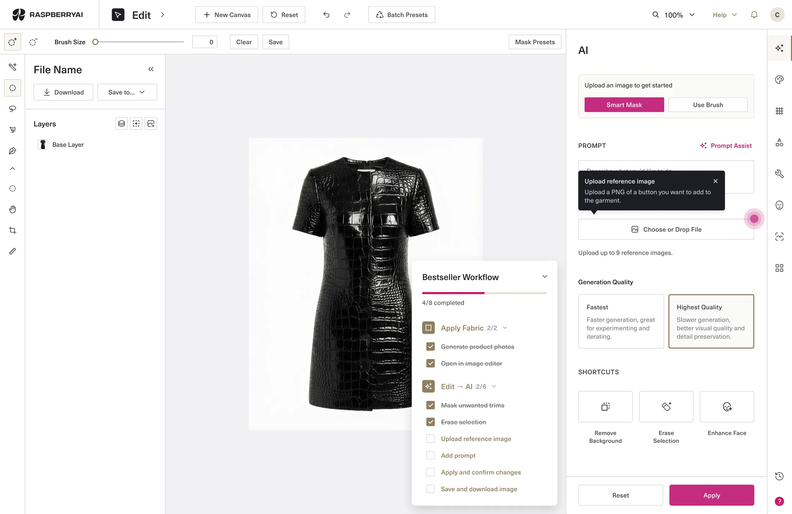
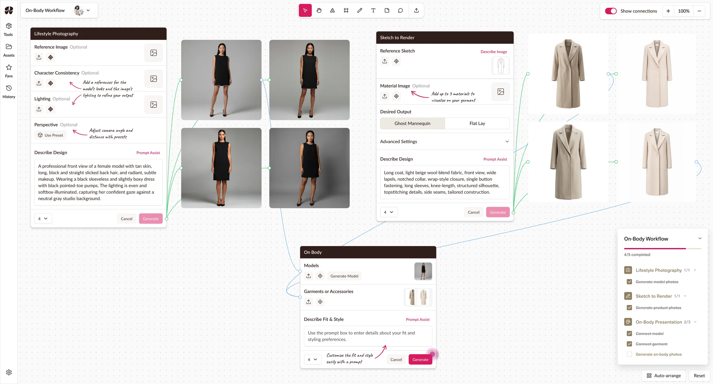
Four workflows run on one pattern (entry point, tracker, step sequence), with each workflow just content dropped in, not a new design. A fifth is a content exercise, not a design one, which matters for whoever extends this later.
A designer who leaves mid-sequence returns where they left off. Progress carries across the workflow rather than resetting per tool.
The pulsing indicator drops to a static circle under reduced motion. Tooltip controls stay keyboard-reachable, including dismissal.
We ran handoff as working sessions rather than a document: I walked the Raspberry team through the prototypes for both classic and Boards, answered questions live, and left annotations where the prototype couldn't carry the detail. I'd built those prototypes in Claude Code, making a live walk through possible rather than a spec review.
Everything shipped except the canvas notes. Engineers were still building Boards while adding guided workflows on a short timeline. They still aren't in the product as of writing, and I’m not sure if that's a decision or a backlog.
Both tutorial systems are live. I asked Raspberry for usage after the fact. In the classic workspace, where the data exists, 1,168 designers viewed the workflows modal over 90 days: 558 picked a workflow, 390 reached Generate, 382 generated, 204 downloaded — 17.5% end to end.
The journey matters more than the total. Almost nobody who starts a workflow fails to finish, but half who reach the home page never start one: the sequences hold, the entry point leaks.
However, finishing a workflow isn’t the same as understanding where Raspberry fits, and this is classic only; nothing equivalent exists for Boards.
Whether this reduced onboarding calls is still unanswered. Call volume isn't in the analytics.
I spent the design worrying about granularity: how finely to break each workflow into steps. I settled it by argument, with no data. The numbers suggest I was worrying about the wrong half. The loss is at the entry point, which I designed as a way in, not as a persuasion. I didn’t ask which part was most likely to fail, and the answer was the part I'd thought about least. If I picked it back up, that's where I'd start: testing whether showing a workflow's finished result up front gets more people to begin one.
Multi-material masking, a mode leaving the rest of the workspace usable.

Created a design system used to redesign and build new features on.